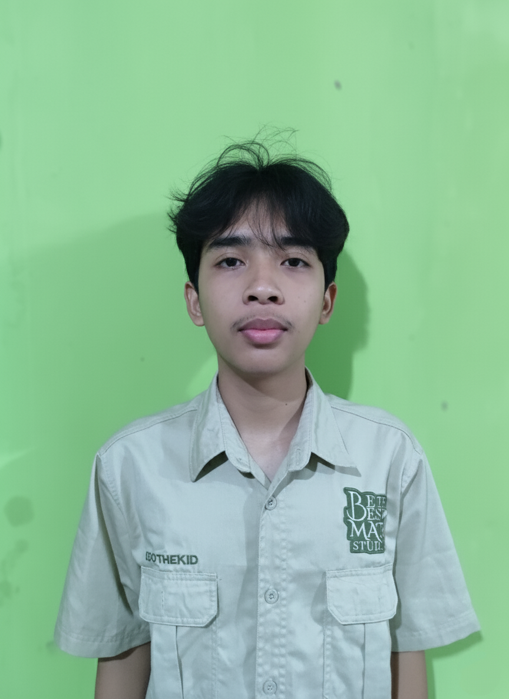

Alfredho Fathurrahman R. A.
NIM. K1323005Mahasiswa aktif S1 Pendidikan Matematika, Universitas Sebelas Maret. Memiliki ketertarikan khusus pada aljabar komputasi dan pengembangan media pembelajaran digital.

Galih Wicaksono
NIM. K1323031Mahasiswa aktif S1 Pendidikan Matematika, Universitas Sebelas Maret. Fokus mendalami penerapan metode numerik dalam pemecahan masalah nyata dan teknologi web.